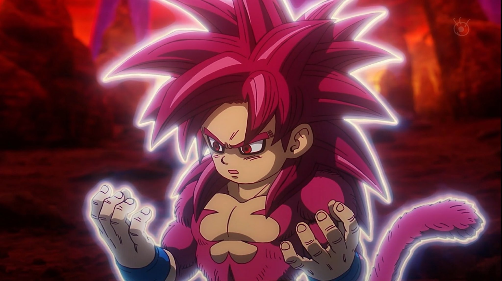

Goku (孫 悟空, Son Gokū, ou Son Goku), nascido Kakarotto (カカロット, Kakarotto) é o protagonista das franquias Dragon Ball. Ele é neto adotivo de Vovô Gohan, filho de Bardock e Gine, o irmão mais novo de Raditz, o marido de Chichi, pai de Gohan e Goten, avô de Pan e mais tarde tataravô de Goku Jr. Sua primeira aparição ocorreu em 1984, no primeiro capítulo do mangá Dragon Ball, publicado na revista Weekly Shōnen Jump. Goku é inspirado em Sun Wukong, personagem do romance Jornada ao Oeste. Porém, Toriyama mudou algumas de suas características para ser mais original. Goku é apresentado como um menino estranho com rabo de macaco e força sobre-humana.
Alegre, corajoso, e também um pouco ingênuo, Goku é um Saiyajin originalmente enviado à Terra quando criança com a missão de destruí-la. Porém, um acidente altera sua memória, fazendo-o crescer com um coração puro e depois se torna o maior defensor da Terra, e também o líder informal dos Guerreiros Z. Através da sua vida, ele treina duro e deseja ser o melhor guerreiro possível, e ao mesmo tempo usando sua força incrível para manter a paz.